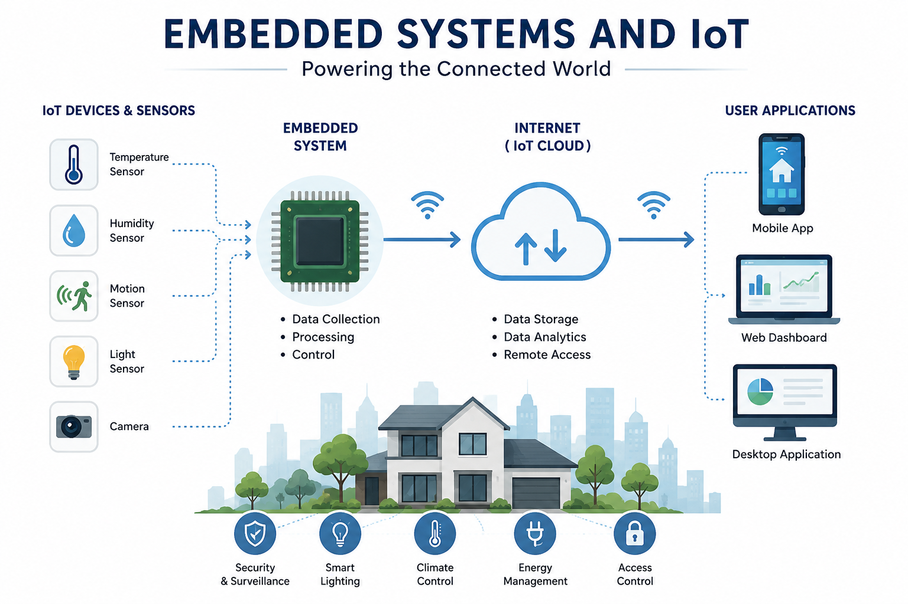

Introduction
Embedded Systems and the Internet of Things (IoT) are transforming the way people interact with technology in their daily lives. From smart homes and wearable devices to industrial automation and healthcare, these technologies enable devices to communicate, process information, and perform tasks efficiently. This blog explores the fundamentals of Embedded Systems and IoT, their real-world applications, and their impact on building a smarter and more connected future.

Main Content
What is an Embedded System?
An Embedded System is a specialized computing system designed to perform a specific task within a larger device. Unlike general-purpose computers, embedded systems are programmed to execute dedicated functions efficiently. They are commonly found in household appliances, automobiles, medical equipment, and industrial machines.
What is the Internet of Things (IoT)?
The Internet of Things (IoT) refers to a network of physical devices connected to the internet that can collect, exchange, and process data. These smart devices communicate with each other to automate tasks, improve efficiency, and provide real-time monitoring and control.
How Embedded Systems and IoT Work Together
Embedded Systems act as the brain of IoT devices by collecting data from sensors, processing the information, and communicating with cloud platforms through the internet. Together, they enable smart solutions that improve productivity, safety, and convenience across various industries.
Key Applications of Embedded Systems and IoT
Embedded Systems and IoT are widely used across different industries to improve automation, efficiency, and connectivity. Some of the major applications include:
- 🏠 Smart Home Automation
- 🏥 Healthcare Monitoring Systems
- 🌾 Smart Agriculture
- 🏭 Industrial Automation
- 🚗 Automotive and Connected Vehicles
- 🏙️ Smart Cities and Infrastructure
Benefits of Embedded Systems and IoT
Embedded Systems and IoT offer numerous advantages by enabling intelligent automation and real-time communication between devices. They improve operational efficiency, reduce human effort, enhance decision-making through data analysis, and provide better user experiences across various applications. As technology continues to evolve, these systems are becoming an essential part of modern digital transformation.
Challenges
Despite their numerous advantages, Embedded Systems and IoT also face several challenges. Data security and privacy remain major concerns due to the continuous exchange of sensitive information. Other challenges include high implementation costs, device compatibility issues, and dependence on reliable internet connectivity. Addressing these challenges is essential for building secure and sustainable IoT ecosystems.
Conclusion
Embedded Systems and the Internet of Things (IoT) are shaping the future of technology by enabling intelligent, connected, and automated solutions. From smart homes to industrial automation, these technologies continue to improve efficiency, productivity, and everyday life. As innovation continues to grow, Embedded Systems and IoT will play a vital role in building a smarter and more sustainable future.
Read More
Interested in learning more about Embedded Systems and IoT?
Explore More About IoT →